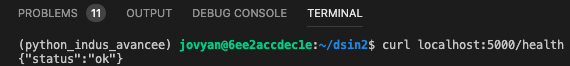
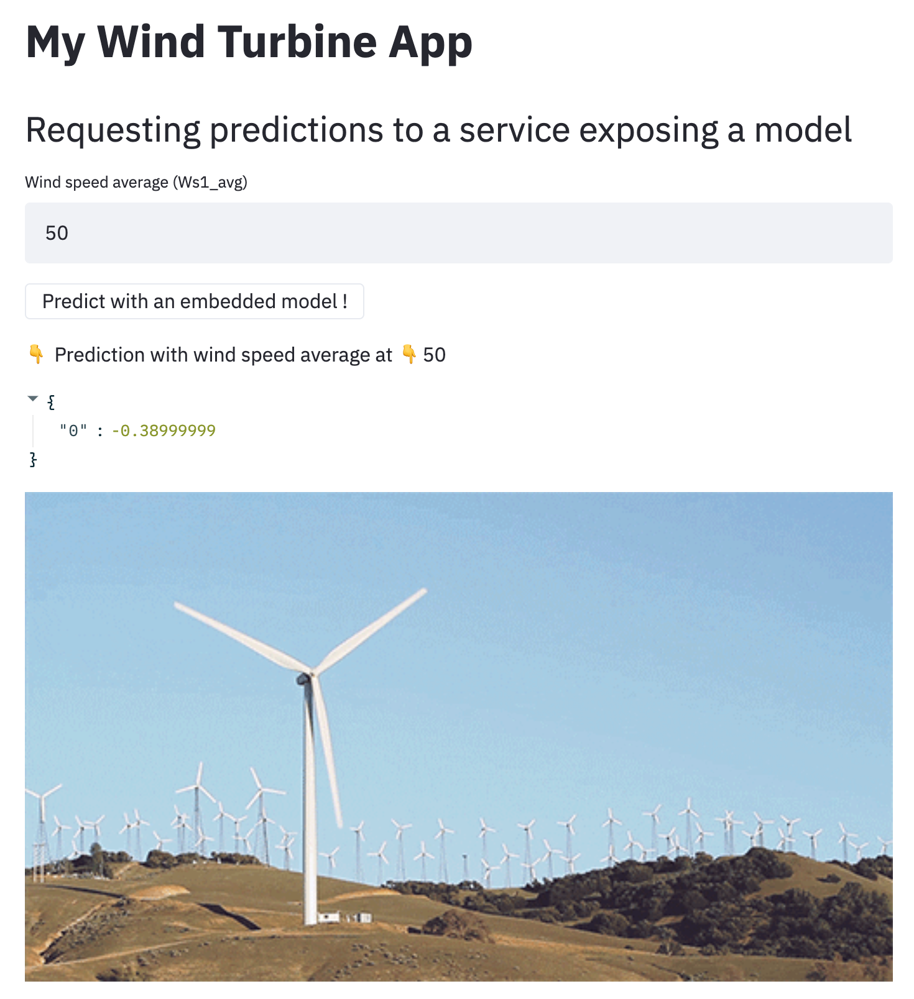
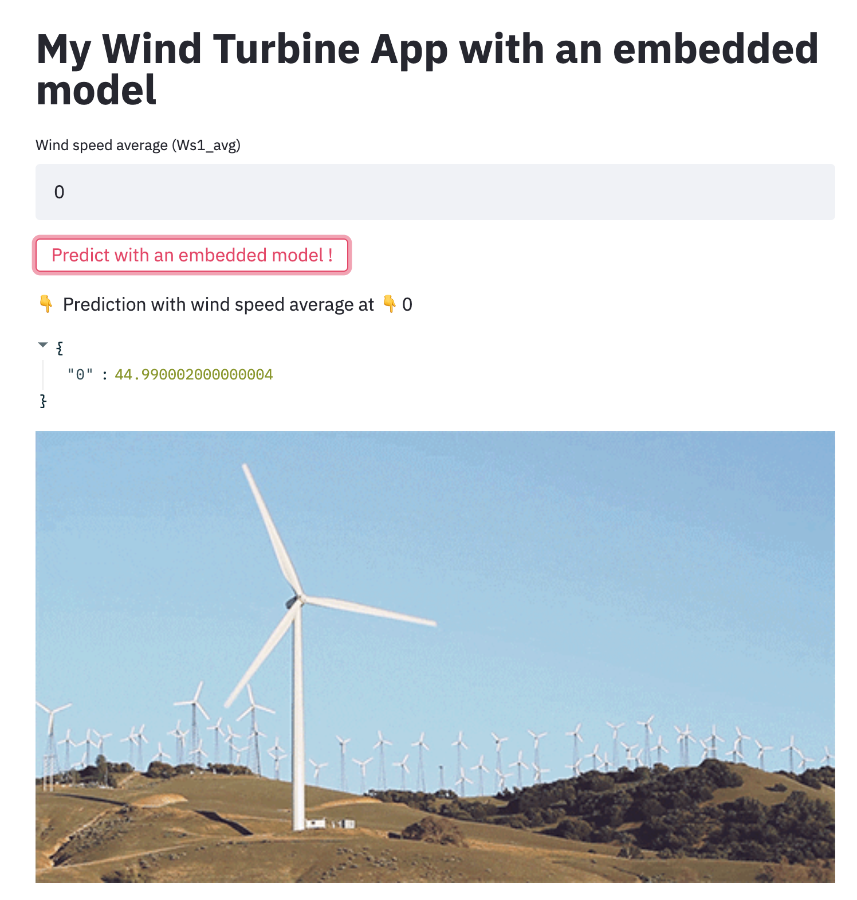
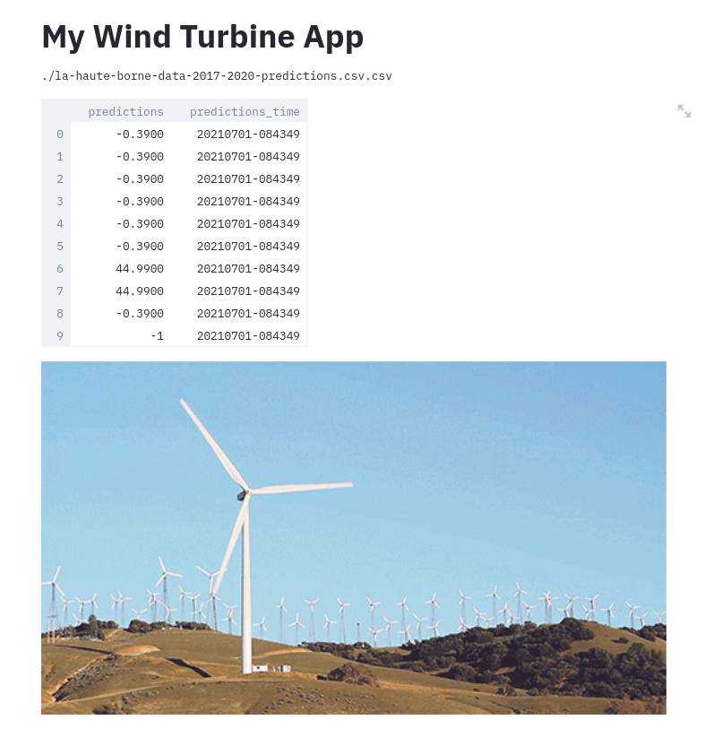

embedded model,model as a service,model published as data,Pour ce TP, utiliser la branch 7_starting_exposition
git checkout 7_starting_exposition
Sur cette branche, il y a maintenant :
embedded_model une app streamlit qui permet de demander des prédictionsexposing_predictions une app streamlit qui permet de voir les prédictions réalisées précédementmodel_as_a_service une api flask qui permet de demander des prédictionsFlask est un microserveur d'application. Il est souvent utilisé en Python pour développer des APIs et exposer des ressources.
dsin2-public-ocac/exposition/model_as_a_service/FLASK_APP=inference.py python -m flask run⚠ Le serveur Flask ne sera pas consultable dans votre navigateur !
Le serveur d'exposition est désormais disponible sur le port 5000 http://localhost:5000, avec:
/health pour vérifier que le service est fonctionnel,/predict pour obtenir des prédictionsDans votre terminal, avec l'outil en ligne de commande cURL, requêtez l'url de healthcheck du service pour s'assurer qu'il fonctionne (http://localhost:5000/health).

La route predict n'est actuellement pas implémenté.
Codez le contenu de cette route.
Quelques informations relatives à la construction de route d'api:
?arg_name=value à la route (exemple : http://localhost:5000/predict?Ws1_avg=10)request.args.get('argument_name') (exemple : received_wind_speed_avg = request.args.get('Ws1_avg'))jsonify (exemple : jsonify(prediction))Comme le modèle prend de nombreuses variables en input, pour simplifier le TP nous vous proposons de passer que 1 ou 2 arguments à la route d'API et fixer les autres par défaut. Pour cela voici un code qui créé un dataframe avec des valeurs par défaut pour toutes les variables :
received_data_df = pd.DataFrame(
{"Wind_turbine_name": "R80721", "Date_time": "2017-02-08T08:00:00+01:00", "Ba_avg": 44.99, "Ba_min": 44.99,
"Ba_max": 44.99, "Ba_std": 0.0, "Rt_avg": 14.0, "Rt_min": 14.0, "Rt_max": 14.0, "Rt_std": 0.0,
"DCs_avg": 38.36, "DCs_min": 17.68, "DCs_max": 52.41, "DCs_std": 9.39, "Cm_avg": 2.39, "Cm_min": 2.05,
"Cm_max": 2.69, "Cm_std": 0.09, "P_avg": -1.89, "P_min": -2.35, "P_max": -1.4, "P_std": 0.15, "Q_avg": 0.0,
"Q_min": 0.0, "Q_max": 0.0, "Q_std": 0.0, "S_avg": 1.89, "S_min": 1.4, "S_max": 2.35, "S_std": 0.15,
"Cosphi_avg": 1.0, "Cosphi_min": 1.0, "Cosphi_max": 1.0, "Cosphi_std": 0.0, "Ds_avg": 38.11, "Ds_min": 17.27,
"Ds_max": 51.91, "Ds_std": 9.39, "Db1t_avg": 33.41, "Db1t_min": 33.20, "Db1t_max": 33.59, "Db1t_std": 0.14,
"Db2t_avg": 30.79, "Db2t_min": 30.6, "Db2t_max": 30.85, "Db2t_std": 0.02, "Dst_avg": 45.59, "Dst_min": 45.29,
"Dst_max": 45.79, "Dst_std": 0.11, "Gb1t_avg": 35.36, "Gb1t_min": 35.09, "Gb1t_max": 35.5, "Gb1t_std": 0.15,
"Gb2t_avg": 37.93, "Gb2t_min": 37.79, "Gb2t_max": 38.0, "Gb2t_std": 0.07, "Git_avg": 34.13, "Git_min": 31.79,
"Git_max": 35.70, "Git_std": 1.04, "Gost_avg": 39.58, "Gost_min": 39.04, "Gost_max": 40.20, "Gost_std": 0.4,
"Ya_avg": 318.12, "Ya_min": 318.12, "Ya_max": 318.12, "Ya_std": 0.0, "Yt_avg": 20.61, "Yt_min": 20.5,
"Yt_max": 20.79, "Yt_std": 0.07, "Ws1_avg": 4.5, "Ws1_min": 0.0, "Ws1_max": 1.94, "Ws1_std": 0.44,
"Ws2_avg": 0.22, "Ws2_min": 0.0, "Ws2_max": 1.92, "Ws2_std": 0.52, "Ws_avg": 0.18, "Ws_min": 0.0,
"Ws_max": 1.89, "Ws_std": 0.44, "Wa_avg": 358.04, "Wa_min": 298.76, "Wa_max": 54.56, "Wa_std": 12.05,
"Va1_avg": None, "Va1_min": None, "Va1_max": None, "Va1_std": None, "Va2_avg": None, "Va2_min": None,
"Va2_max": None, "Va2_std": None, "Va_avg": 39.93, "Va_min": -19.35, "Va_max": 96.44, "Va_std": 12.05,
"Ot_avg": 4.80, "Ot_min": 4.8, "Ot_max": 4.90, "Ot_std": 0.009, "Nf_avg": 50.0, "Nf_min": 49.95,
"Nf_max": 50.02, "Nf_std": 0.00, "Nu_avg": 698.40, "Nu_min": 696.01, "Nu_max": 708.03, "Nu_std": 2.40,
"Rs_avg": 0.33, "Rs_min": 0.0, "Rs_max": 0.49, "Rs_std": 0.16, "Rbt_avg": 19.02, "Rbt_min": 19.0,
"Rbt_max": 19.1, "Rbt_std": 0.03, "Rm_avg": -18.88, "Rm_min": -438.32, "Rm_max": 0.0, "Rm_std": 79.82,
"Pas_avg": None, "Pas_min": None, "Pas_max": None, "Pas_std": None, "Wa_c_avg": 358.04, "Wa_c_min": None,
"Wa_c_max": None, "Wa_c_std": None, "Na_c_avg": 358.04, "Na_c_min": None, "Na_c_max": None, "Na_c_std": None},
index=[0])
Utiliser les méthodes prepare_features et predict pour réaliser une prédiction.
Pour tester votre code éteignez l'API et redémarrez là avec la commande FLASK_APP=inference.py python -m flask run puis requêtez une prédiction sur http://localhost:5000/predict.
Dans le dossier exposition/ se trouvent un fichier docker-compose.yaml, exécutable avec docker-compose up.
NB : Il n'est pas possible d'exécuter cette commande dans l'environment de TP. Si vous avez docker et docker-compose vous pouvez le faire sur votre machine personnel. Sinon, le formateur à déjà fait cela à dans l'EC2 de TP.
Une fois lancée, l'application streamlit est accessible sur <http://:15002> et le service Flask est disponible sur <http://:15003>.
Dans le dossier exposition/model_as_a_service/ se trouve la définition de ces 2 services:
app.py,inference.py.L'application streamlit permet d'afficher une prédiction à la demande selon la valeur de Ws1_avg spécifiée par l'utilisateur.

Wind Speed Average à 0, 10, 20, 50, 100 et demander une prédictionDans le dossier exposition/ se trouvent un fichier docker-compose.yaml, exécutable avec docker-compose up.
NB : Il n'est pas possible d'exécuter cette commande dans l'environment de TP. Si vous avez docker et docker-compose vous pouvez le faire sur votre machine personnel. Sinon, le formateur à déjà fait cela à dans l'EC2 de TP.
Une fois lancée, l'application streamlit avec modèle embarqué est accessible sur <http://:15001>.
Dans le dossier exposition/embedded_model/ se trouve la définition de ce service de dashboarding:
embedded_model.py,L'application streamlit permet d'afficher une prédiction à la demande selon la valeur de Ws1_avg spécifiée par l'utilisateur.

Wind Speed Average à 0, 10, 20, 50, 100 et demander une prédictionDans le dossier exposition/ se trouvent un fichier docker-compose.yaml, exécutable avec docker-compose up.
NB : Il n'est pas possible d'exécuter cette commande dans l'environment de TP. Si vous avez docker et docker-compose vous pouvez le faire sur votre machine personnel. Sinon, le formateur à déjà fait cela à dans l'EC2 de TP.
Une fois lancée, l'application streamlit est accessible sur <http://:15000>.
Dans le dossier exposition/exposing_predictions/ se trouve la définition de ce service de dashboarding dans display_predictions.py.
L'application streamlit affiche des prédictions déjà réalisées.
